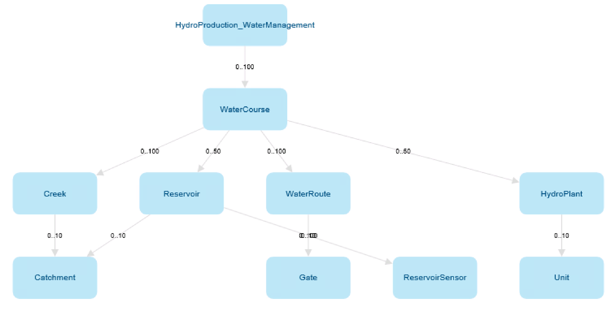
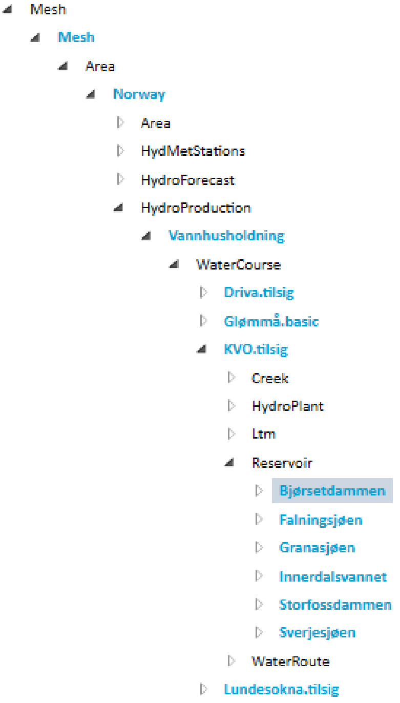

Mesh object modelling¶
Mesh is a data management system based on object modelling. Real world objects are represented in Mesh using the following concepts:
models and model definitions
objects and object definitions
attributes and attribute definitions
Model definition contains one or more object definitions. Each object definition contains one or more attribute definitions. The definitions serve as blueprints and can be instantiated. Instances of the definitions are just called: models, objects and attributes.
For example we could have a model definition called EnergySystem that has object definition called PowerPlant that has two attribute definitions:
NumberOfWindTurbines of integer type
PowerProduction time series
Such definitions could be instantiated and so we could have: model called MyEnergySystem that has three objects:
PowerPlantA with NumberOfWindTurbines = 5
PowerPlantB with NumberOfWindTurbines = 10
PowerPlantC with NumberOfWindTurbines = 3
Model definition¶
The Mesh model definition is designed to represent the structure of customer’s infrastructure and assets. This can be a hydropower production system with water courses, creeks, reservoirs, water routes, gates, sensors, hydro plants and so on. The Mesh model definition contains object definitions and attribute definitions of different types. Each asset type is represented by a Mesh object definition.
{kind=link}
Object definition¶
Contains attribute definitions of different types. Object definition could be compared to a C++ class.
For example: an object definition could represent a reservoir. It can have an attribute definition that represents current water level in a reservoir and an ownership relation attribute definition that represents how water is flowing to another object like hydro plant.
Attribute definition¶
Attribute definition may be singular or an array of one of the following types:
self-contained simple type, like: string, boolean, int, double or UTC timestamp.
time series attribute, it can be a calculation or a reference to a physical time series or virtual time series
relation to other object definition
Each attribute definition has:
ID
name
description
value type, e.g.: double attribute or time series attribute
minimum and maximum cardinality, useful for definitions of an array type (e.g. array of boolean), for singular definitions they are always set to 1
Additionally specific attribute definitions may have additional fields, e.g.: time series attribute definition has template expression and ownership relation attribute definition has target object type name.
Attribute definition could be compared to a C++ class member.
Model¶
Based on the Mesh model definition, customers can build a model of their infrastructure by creating instances matching their specific assets. For example water courses named ‘Driva’, ‘Lundesokna’, reservoirs named ‘Innerdalsvannet’, ‘Storfossdammen’ and so on. The resulting model is a tree where all the nodes are Mesh objects from the Mesh model that represent customer’s physical assets.
{kind=link}
In the diagram above object names are written in blue, object value types are written in black and there are no attribute shown.
It is possible to create relations (via link or ownership relation attributes) between objects in this tree.
Object¶
Mesh object contains attributes. Object is an instance of an object definition.
Objects are identified by IDs or paths, refer to objects and attributes paths for more information.
Attribute¶
Attribute is an instance of attribute definition. Attribute contains a definition (inherited from attribute definition) and possibly a value of some type.
Some of the Mesh attribute types are grouped in the Mesh Python SDK for better readability. Here is a list of all attribute types currently supported:
Simple attributes - all of them have value(s) (defined on attribute level) and default value (defined on the attribute definition level). They are aggregating the following types:
Double attribute - additionally it has minimum value, maximum value and unit of measurement (defined on the attribute definition level).
Definition value types are “DoubleAttributeDefinition” for singular value or “DoubleArrayAttributeDefinition” for collection of values.
Integer attribute - additionally it has minimum value, maximum value and unit of measurement (defined on the attribute definition level).
Definition value types are “Int64AttributeDefinition” for singular value or “Int64ArrayAttributeDefinition” for collection of values.
Boolean attribute - definition value types are “BooleanAttributeDefinition” for singular value or “BooleanArrayAttributeDefinition” for collection of values.
String attribute - definition value types are “StringAttributeDefinition” for singular value or “StringArrayAttributeDefinition” for collection of values.
UTC time attribute- additionally it has minimum value and maximum values (defined on the attribute definition level).
The default, minimum and maximum value for this attribute is a string, where you can use expressions like: “UTC20220510072415”.
Definition value types are “UtcDateTimeAttributeDefinition” for singular value or “UtcDateTimeArrayAttributeDefinition” for collection of values.
Time series attributes - they can be a:
reference to a physical time series: it has actual data (timestamps, values and flags) and meta data (e.g.: curve type, resolution, etc.).
reference to a virtual time series: it has defined an expression to calculate time series data (similar to calculation time series).
calculation time series: it has defined an expression to calculate time series data. The calculation expression can be defined on the attribute definition level (then it is a template expression) or overwritten for the given attribute in the model (then it stored as local expression).
Definition value types are “TimeseriesAttributeDefinition” for singular value or “TimeseriesCollectionAttributeDefinition” for collection of values.
Ownership relation attributes - represent relations where one object owns another object. The owned object’s owner is always an ownership relation attribute that belongs to some other object. There are two types of ownership relation attributes:
one-to-one
one-to-many
When creating a new object the owner must be an ownership relation attribute of one-to-many type. Ownership relation attribute has defined target object type name (on the attribute definition level) that shows what object value type is accepted to be added as child.
Definition value types are “ElementAttributeDefinition” for singular value or “ElementCollectionAttributeDefinition” for collection of values.
Refer to Mesh relations for more information.
Link relation attributes - represent relations where one object may point to another object, but does not own it. There are two types of link relation attributes:
one-to-one
one-to-many
Definition value types are “ReferenceAttributeDefinition” for singular value or “ReferenceCollectionAttributeDefinition” for collection of values.
Refer to Mesh relations for more information.
Versioned link relation attributes - extension of link relation attributes, where the target object can change over time. It consists of a list of pairs:
Target object ID.
Timestamp which indicates start of the period where the target object is active (linked to), the target object is active until the next target object in the list, if any, becomes active.
There are two types of versioned link relation attributes:
one-to-one
one-to-many
Definition value types are “ReferenceSeriesAttributeDefinition” for singular value or “ReferenceSeriesCollectionAttributeDefinition” for collection of values.
Refer to Mesh relations for more information.
Note
The definition value types are useful for filtering attribute search results. For example to list only time series attributes.
Attributes are identified by IDs or paths, refer to objects and attributes paths section for more information.
Objects and attributes paths¶
Objects and attributes are identified by IDs or paths. Path is a string uniquely identifying an object in the model and contains all ancestors of a given object and optionally their ownership relation attributes.
For example the path for the Innerdalsvannet reservoir from example diagram in model (object names are written in blue) is:
Model/Mesh/Norway/Vannhusholdning/KVOtilsig/Innerdalsvannet
This is a path where only objects are provided. A path where also ownership relation attributes that connect those objects are provided is called full name. For the same Innerdalsvannet reservoir the full name path is:
Model/Mesh.To_Areas/Norway.To_HydroProduction/Vannhusholdning.To_WaterCourses/KVOtilsig.To_Reservoirs/Innerdalsvannet
As you can see the attributes are provided after objects and a dot “.” character. For example full name path for an attribute of the Innerdalsvannet reservoir is:
Model/Mesh.To_Areas/Norway.To_HydroProduction/Vannhusholdning.To_WaterCourses/KVOtilsig.To_Reservoirs/Innerdalsvannet.MaxVolume
Every path in Mesh model starts with Model/ prefix.
Note
Mesh Python SDK library returns always full names as path when reading objects or attributes. The path containing attributes (full name path) is guaranteed to be unique, whereas depending on the model the path without attributes may be ambiguous.